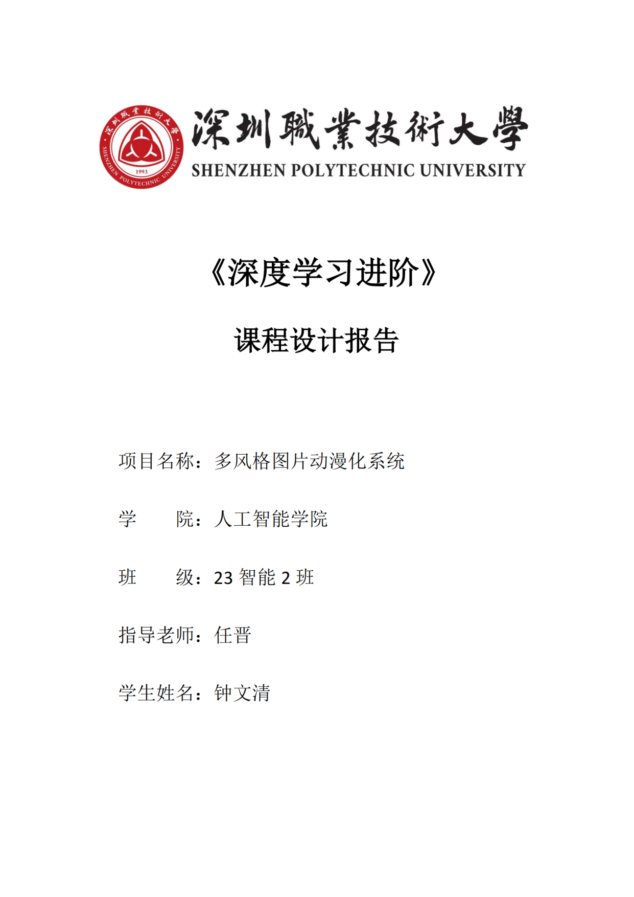
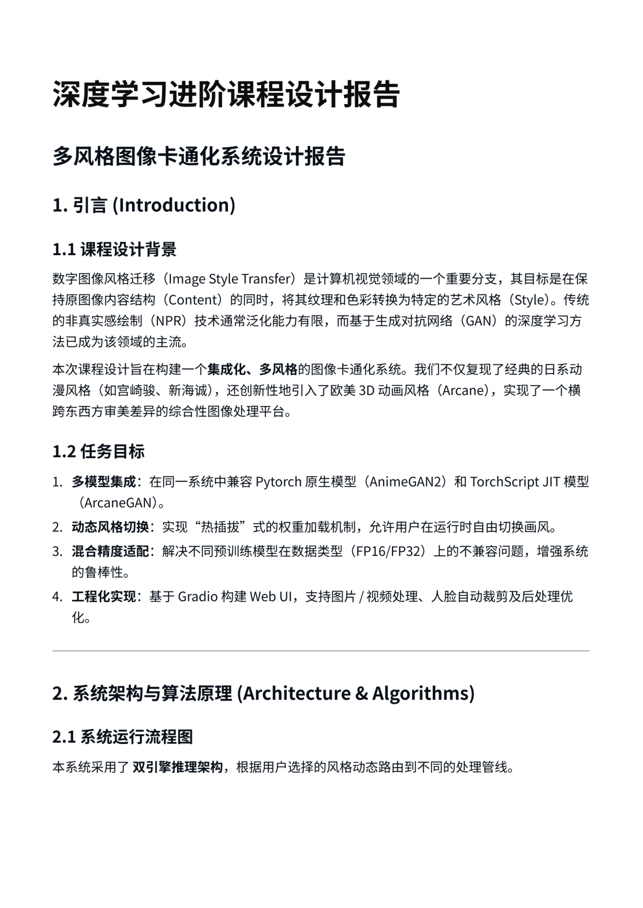
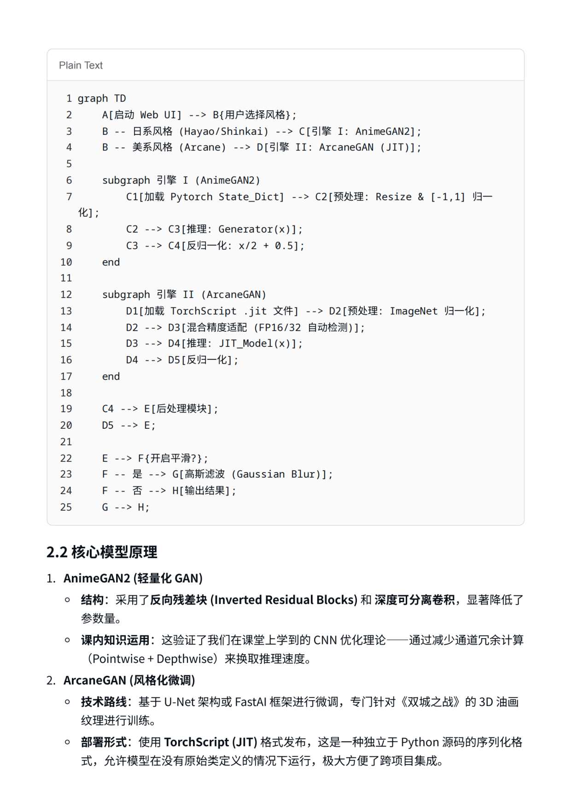
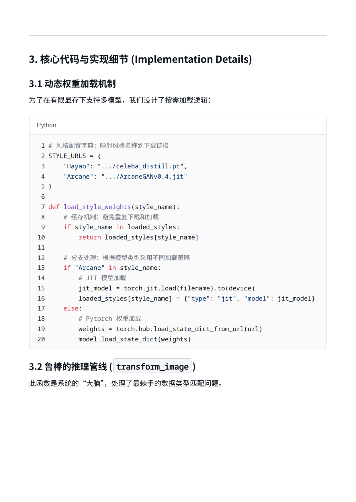
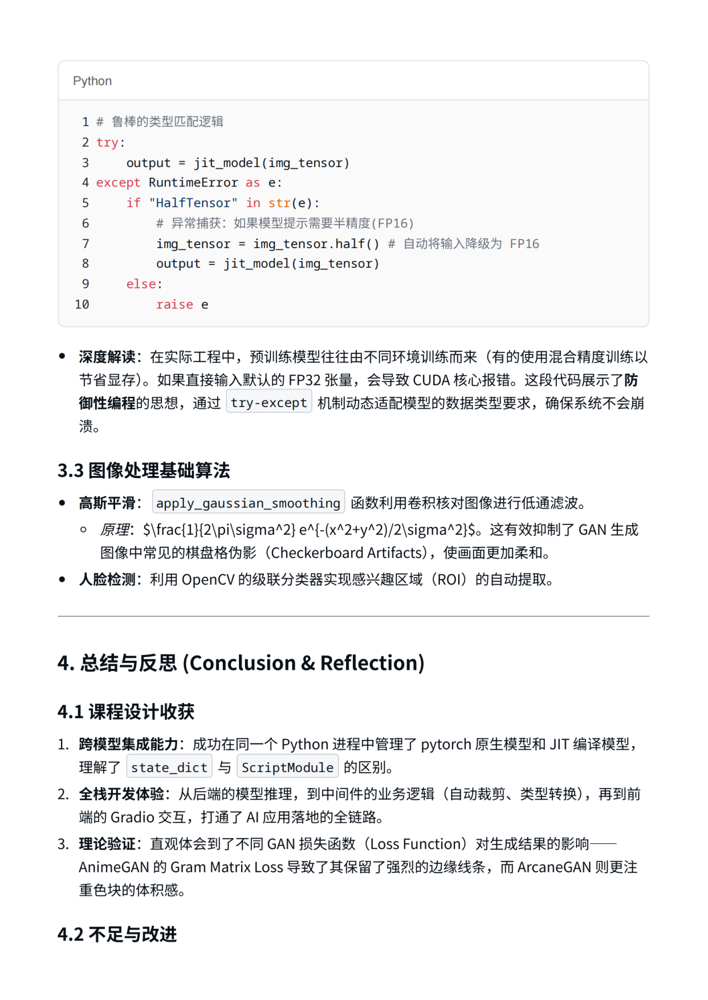
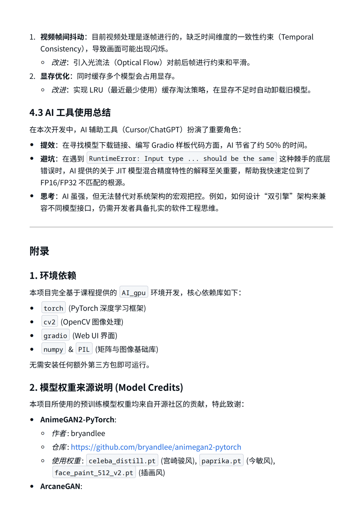
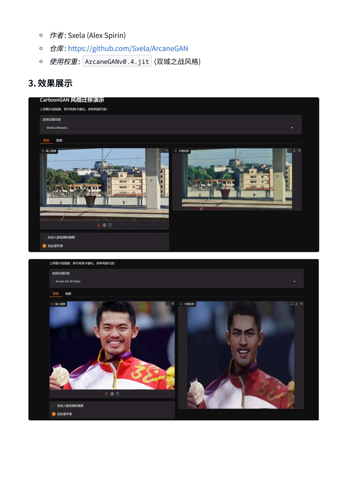
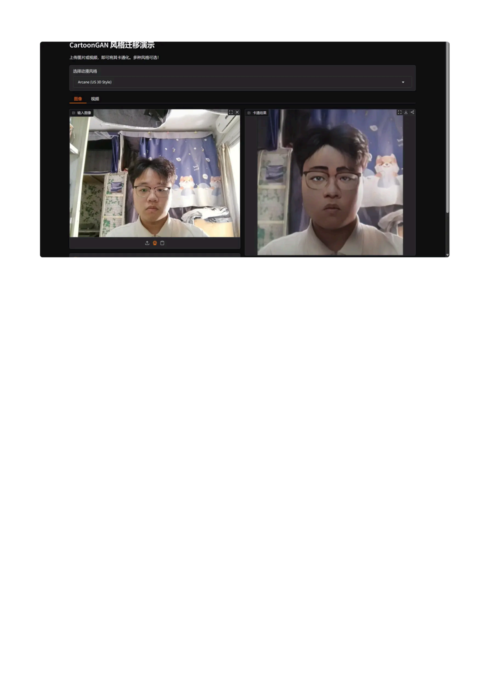

深度学习课程设计 · 深圳职业技术大学
AnimeGAN2 · ArcaneGAN · 5 种动漫风格 · 图片+视频双模式
集成 AnimeGAN2 与 ArcaneGAN 多模型风格迁移应用。支持多种动漫风格，覆盖图片 + 视频双模式转换，通过 Gradio Web 界面一键分享，含人脸检测裁剪与高斯平滑后处理。
项目实现了从论文原理到工程落地的完整流程，涵盖模型加载、图像预处理、风格推理、后处理优化和交互界面设计。
每种风格对应独立的 GAN 模型权重，通过统一接口热切换，无需重启应用。
| 模块 | 技术选型 |
|---|---|
| 模型推理 | PyTorch · AnimeGAN2 · ArcaneGAN |
| Web 界面 | Gradio — 一键启动，浏览器访问 |
| 图像处理 | OpenCV · PIL |
| 人脸检测 | Haar Cascade / MTCNN |
| 视频处理 | FFmpeg 帧提取与合成 |







